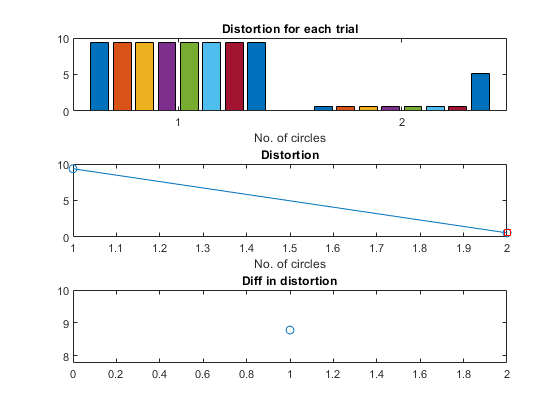

circleFitValidate
Validate (determine) the number of circles for fitting in a 2D dataset
Contents
Syntax
- param=circleFitValidate(data, opt, showPlot)
Description
param=circleFitValidate(data, opt) returns the best parameters for the selected number of circles via cluster validation
- data: 2D data for fitting circles
- opt: Options for validating no. of circles
- opt.circleNumMax: Max no. of circles
- opt.trialNum: No. of trials for circleFit
- opt.errorReductionTh: Error reduction threshold to determine the no. of circles
- opt.interactiveDisplay: 1 for interactive display
- opt.circleFitOpt: options for circleFitOpt
param: The best parameters for the selected number of circles, where each column is the parameters for a circle
Example
im=imread('circleEdge02.png'); [yEdge, xEdge]=find(im); % x and y coordinates of edge data=[xEdge'; yEdge']; opt=circleFitValidate('defaultOpt'); opt.circleNumMax=2; param=circleFitValidate(data, opt, 1);
1/2 2/2 Iteration count = 1/200, distortion = 8.049933 Iteration count = 2/200, distortion = 4.857845 Iteration count = 3/200, distortion = 3.852563 Iteration count = 4/200, distortion = 3.431991 Iteration count = 5/200, distortion = 3.229792 Iteration count = 6/200, distortion = 2.966707 Iteration count = 7/200, distortion = 2.701485 Iteration count = 8/200, distortion = 2.401549 Iteration count = 9/200, distortion = 2.010672 Iteration count = 10/200, distortion = 1.336104 Iteration count = 11/200, distortion = 0.608004 Iteration count = 12/200, distortion = 0.565160 Iteration count = 13/200, distortion = 0.565160 Iteration count = 1/200, distortion = 7.090924 Iteration count = 2/200, distortion = 4.239680 Iteration count = 3/200, distortion = 3.735969 Iteration count = 4/200, distortion = 3.405931 Iteration count = 5/200, distortion = 3.181368 Iteration count = 6/200, distortion = 2.967814 Iteration count = 7/200, distortion = 2.764443 Iteration count = 8/200, distortion = 2.402620 Iteration count = 9/200, distortion = 2.010672 Iteration count = 10/200, distortion = 1.336104 Iteration count = 11/200, distortion = 0.608004 Iteration count = 12/200, distortion = 0.565160 Iteration count = 13/200, distortion = 0.565160 Iteration count = 1/200, distortion = 6.477874 Iteration count = 2/200, distortion = 4.751079 Iteration count = 3/200, distortion = 3.888712 Iteration count = 4/200, distortion = 3.467929 Iteration count = 5/200, distortion = 3.200150 Iteration count = 6/200, distortion = 2.953374 Iteration count = 7/200, distortion = 2.701929 Iteration count = 8/200, distortion = 2.356775 Iteration count = 9/200, distortion = 1.910481 Iteration count = 10/200, distortion = 1.214430 Iteration count = 11/200, distortion = 0.568067 Iteration count = 12/200, distortion = 0.565160 Iteration count = 13/200, distortion = 0.565160 Iteration count = 1/200, distortion = 9.169305 Iteration count = 2/200, distortion = 4.379138 Iteration count = 3/200, distortion = 3.939252 Iteration count = 4/200, distortion = 3.564194 Iteration count = 5/200, distortion = 3.288856 Iteration count = 6/200, distortion = 3.118245 Iteration count = 7/200, distortion = 2.948508 Iteration count = 8/200, distortion = 2.734773 Iteration count = 9/200, distortion = 2.316505 Iteration count = 10/200, distortion = 1.872779 Iteration count = 11/200, distortion = 1.157736 Iteration count = 12/200, distortion = 0.565160 Iteration count = 13/200, distortion = 0.565160 Iteration count = 1/200, distortion = 6.364156 Iteration count = 2/200, distortion = 4.904240 Iteration count = 3/200, distortion = 4.125053 Iteration count = 4/200, distortion = 3.556238 Iteration count = 5/200, distortion = 3.285119 Iteration count = 6/200, distortion = 3.061691 Iteration count = 7/200, distortion = 2.873762 Iteration count = 8/200, distortion = 2.635175 Iteration count = 9/200, distortion = 2.273532 Iteration count = 10/200, distortion = 1.818467 Iteration count = 11/200, distortion = 0.982391 Iteration count = 12/200, distortion = 0.565160 Iteration count = 13/200, distortion = 0.565160 Iteration count = 1/200, distortion = 6.188948 Iteration count = 2/200, distortion = 4.396702 Iteration count = 3/200, distortion = 3.729692 Iteration count = 4/200, distortion = 3.390177 Iteration count = 5/200, distortion = 3.205674 Iteration count = 6/200, distortion = 3.036839 Iteration count = 7/200, distortion = 2.840938 Iteration count = 8/200, distortion = 2.517059 Iteration count = 9/200, distortion = 2.148106 Iteration count = 10/200, distortion = 1.614354 Iteration count = 11/200, distortion = 0.849651 Iteration count = 12/200, distortion = 0.565160 Iteration count = 13/200, distortion = 0.565160 Iteration count = 1/200, distortion = 7.431474 Iteration count = 2/200, distortion = 5.348522 Iteration count = 3/200, distortion = 5.244262 Iteration count = 4/200, distortion = 4.779468 Iteration count = 5/200, distortion = 4.006152 Iteration count = 6/200, distortion = 3.537536 Iteration count = 7/200, distortion = 3.277386 Iteration count = 8/200, distortion = 3.060211 Iteration count = 9/200, distortion = 2.840938 Iteration count = 10/200, distortion = 2.517059 Iteration count = 11/200, distortion = 2.148106 Iteration count = 12/200, distortion = 1.614354 Iteration count = 13/200, distortion = 0.849651 Iteration count = 14/200, distortion = 0.565160 Iteration count = 15/200, distortion = 0.565160 Iteration count = 1/200, distortion = 8.499250 Iteration count = 2/200, distortion = 5.257594 Iteration count = 3/200, distortion = 5.182830 Iteration count = 4/200, distortion = 5.167117 Iteration count = 5/200, distortion = 5.167117